Malerei von Patricia Luber
Bienvenue! Schön, dass Sie den Weg hierher gefunden haben. Dies ist eine Auswahl von meinen Bildern, die ich zum Verkauf oder auch für Ausstellungen zur Verfügung stelle. Alle Bilder sind Unikate und können auch gerne vor Ort bei mir in Köln besichtigt werden.
Jetzt entdecken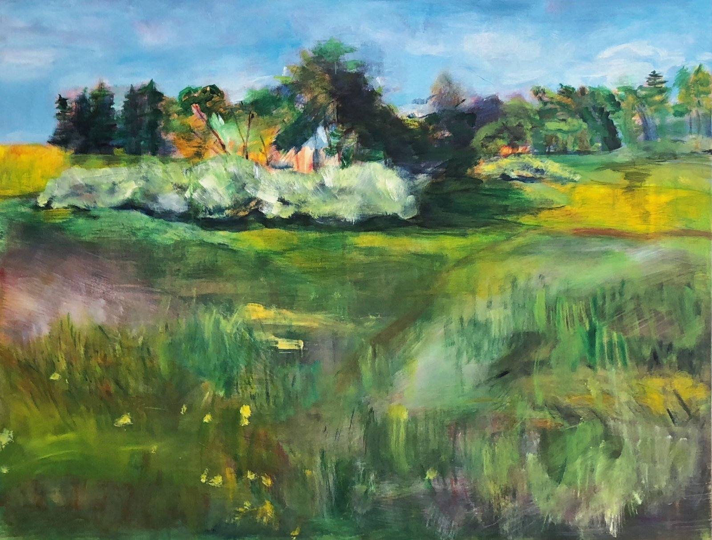
Alle Produkte
 Obsteller
Obsteller
 Fische 1
Fische 1
 Libellen
Libellen
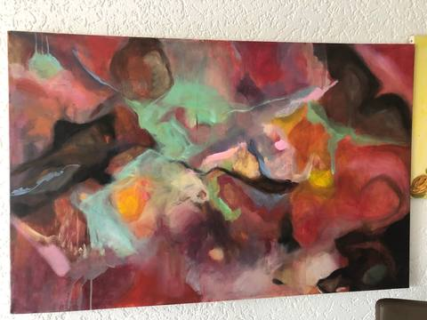
Rot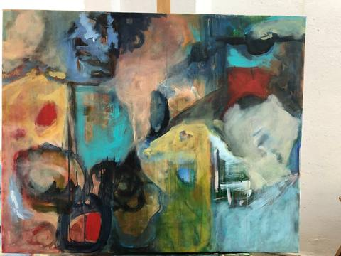
Türkis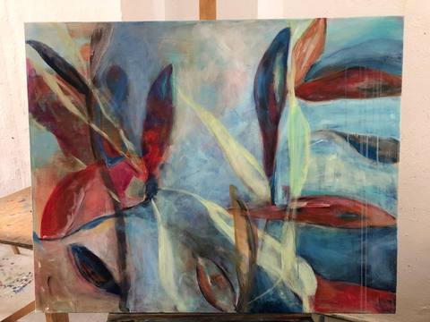
Blätter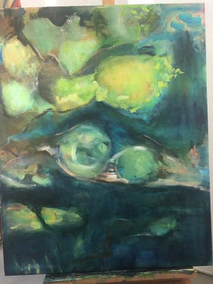
Grün in Grün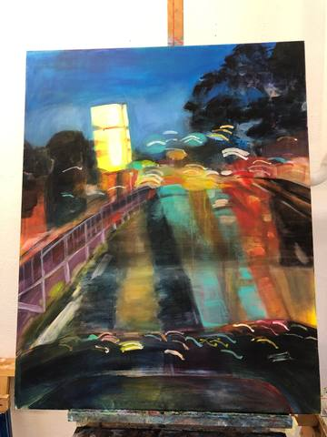
Köln bei Nacht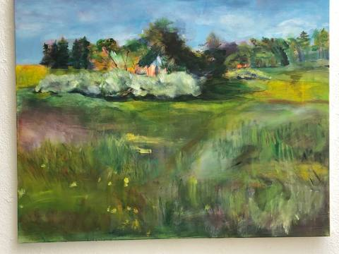
Wald und Wiese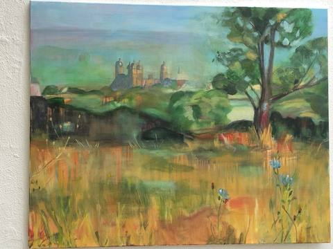
Aschaffenburg Fische 2
Fische 2
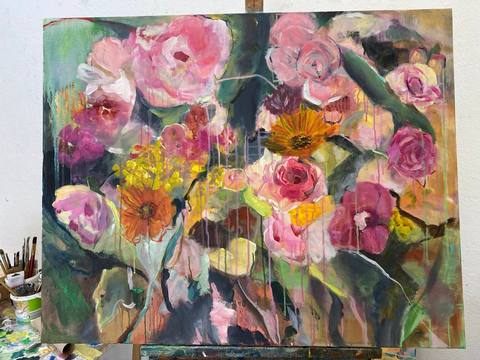
Blumenabstraktion Mönch in Laos
Mönch in Laos
 Herde in Myanmar
Herde in Myanmar
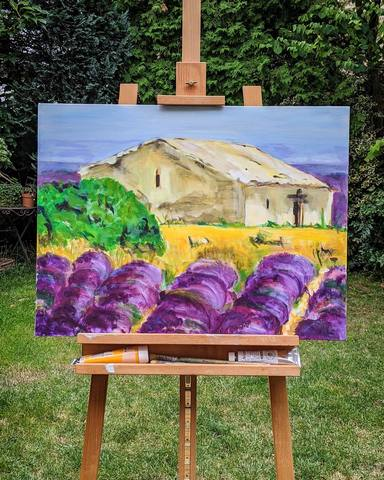
Lavendelfelder, Provence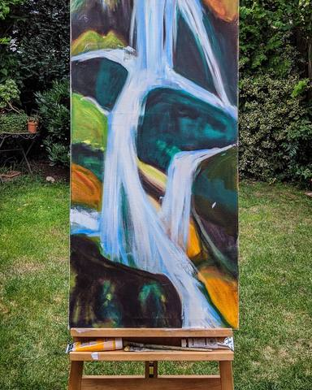
Wasserfall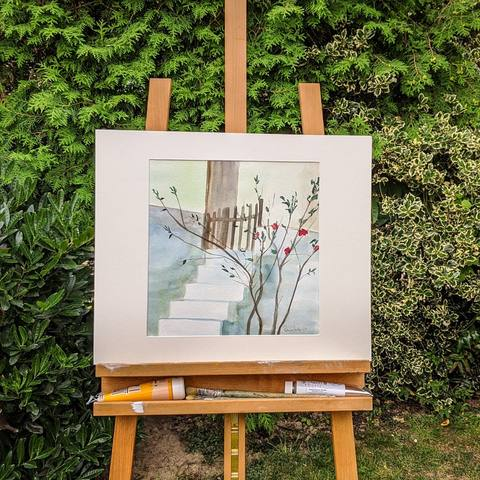
Treppe mit Blüten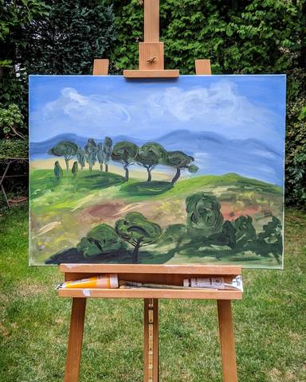
Toskana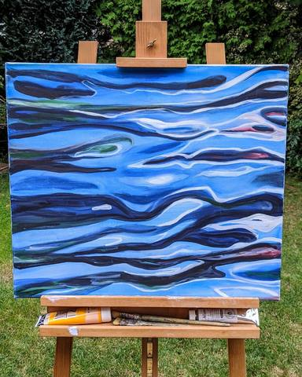
Wasserspiegelungen klein Tulpenmeer
Tulpenmeer
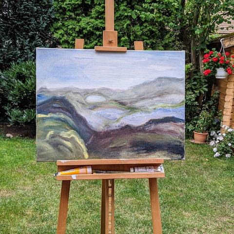
Traumlandschaft Zitronen mit Paprika
Zitronen mit Paprika
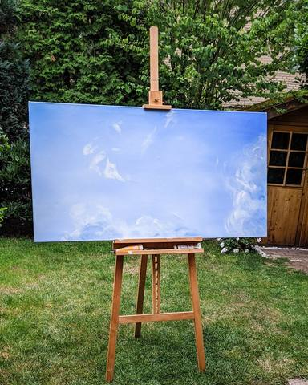
Himmel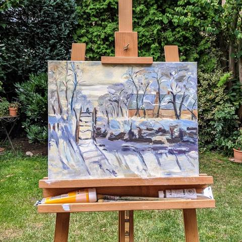
Winterlandschaft nach Monet Löwen
Löwen
 Gelbe Seerosen
Gelbe Seerosen
 Blätter
Blätter
 Exotische Blumen
Exotische Blumen
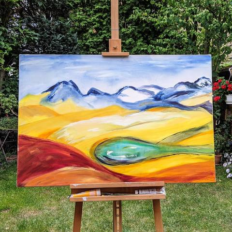
Wüstenlandschaft Madame
Madame
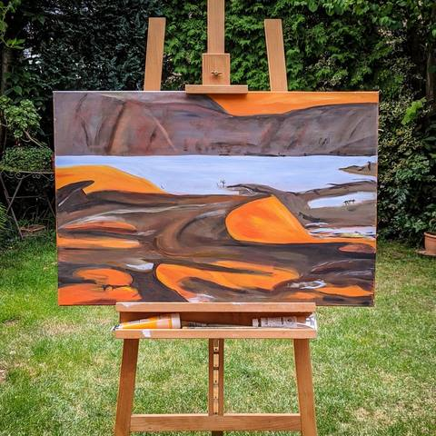
Sonnenuntergang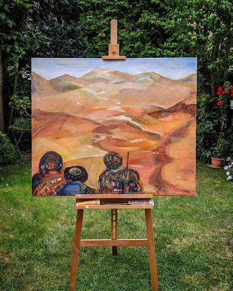
Nomaden Jazz Dancer
Jazz Dancer
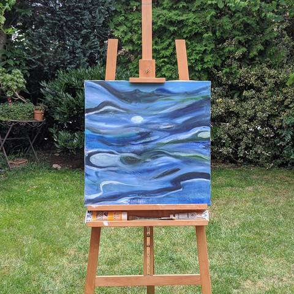
Meeresspiel 2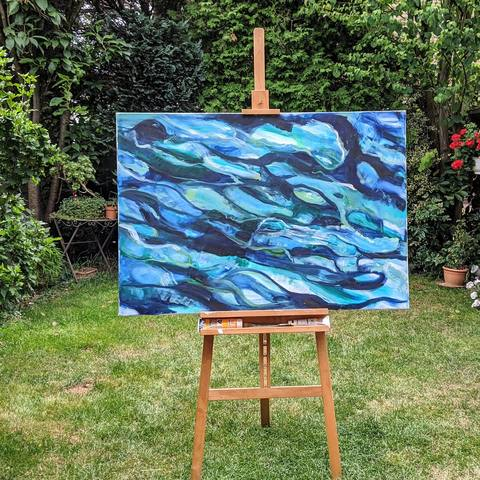
Wasserspiegelungen groß Flamenco Tänzerin 2
Flamenco Tänzerin 2
 Model
Model
 Tibetischer Junge
Tibetischer Junge